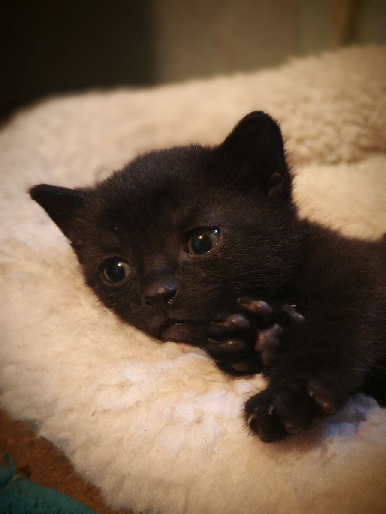
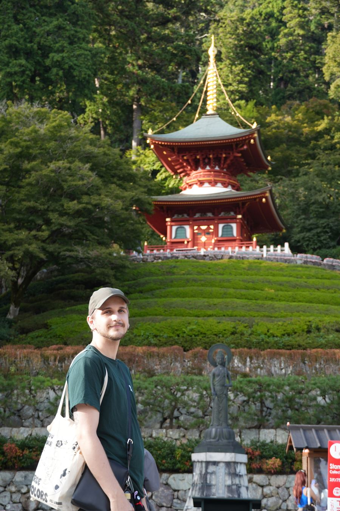
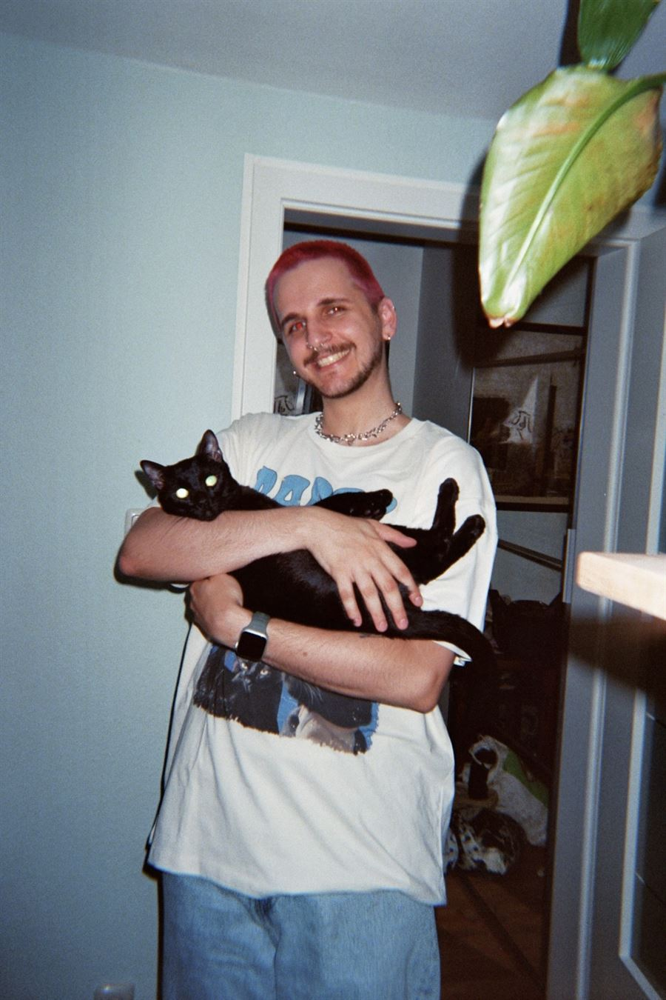
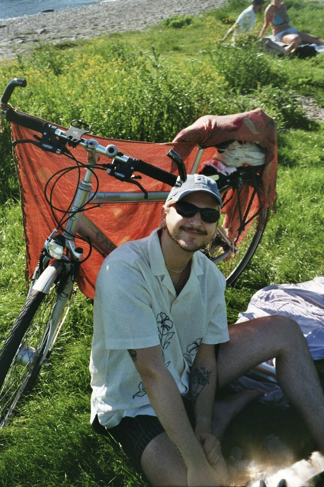

Software engineering
Building practical tools that take the boring, repetitive work off people’s plates.
Software Engineer • 2D Pipeline TD • ML
I’m Mirco Tornow, a software engineer. For the past few years I’ve built production tools in Python and C++ for the VFX industry. At my studio I’m the in-house OpenRV expert and the person people call when something breaks. I’ve worked remotely since 2021 with international teams across Europe and North America.
My friends call me MacGyver because I’ll fix pretty much anything. During work and travel in Canada, I once fixed a broken fridge with a hair tie and some tape. Everyone called it “German engineering”. These days it’s mostly bugs in code, but fixing things and making slow things fast is still what I enjoy most.
Focus
Building practical tools that take the boring, repetitive work off people’s plates.
Part of my Master’s right now. Projects will show up here as I build them.
Making slow things fast, from concurrency to compute-heavy problems.
About me
I’m into photography, biking, traveling, ice skating, tarot, houseplants, and journaling.
And then there’s Bartholomew, Barty for short: my black cat, my everything, and my coworkers’ favorite coworker. He joins my calls whether I want him to or not. And yes, he goes on walks on a leash.



